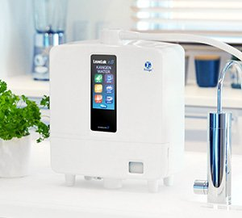

Enagic Leveluk K8 — Wasserionisierer für Ihr Wohlbefinden. Das leistungsstärkste Modell mit 8 Titan-Platin-Elektrodenplatten und 5 verschiedenen Wasserarten.
Wasser ist das wichtigste Element für unseren Körper. Der Enagic Leveluk K8 verwandelt gewöhnliches Leitungswasser in ionisiertes Wasser verschiedener pH-Stufen — für unterschiedliche Anwendungen im Alltag.
Mit 8 Titan-Platin-Elektrodenplatten ist der K8 das leistungsstärkste Modell der Kangen-Reihe. Sein kompaktes Design passt in jede Küche, und das mehrsprachige LCD-Display macht die Bedienung intuitiv und einfach.

Der Leveluk K8 erzeugt fünf verschiedene Wasserarten für unterschiedliche Anwendungen in Ihrem Alltag.
Basisches Wasser mit pH 8.5 bis 9.5 — zum Trinken und Kochen. Weiches, angenehm schmeckendes Wasser für den täglichen Genuss.
Neutrales, gefiltertes Wasser mit pH 7.0 — ideal für die Einnahme von Nahrungsergänzungsmitteln und zur Zubereitung von Babynahrung.
Leicht saures Wasser mit pH 4.0 bis 6.0 — ein natürliches Pflegewasser für Haut und Haare. Ideal zum Waschen und als Toner.
Stark basisches Wasser mit pH 11.0 — nicht zum Trinken. Ideal zur Reinigung von Obst, Gemüse und Küchenoberflächen.
Wasser mit pH 2.5 — nicht zum Trinken. Geeignet für die Hygiene im Haushalt und die Reinigung von Oberflächen.
Titan-Platin-Platten für eine zuverlässige und konsistente Ionisierung — das leistungsstärkste Modell der Kangen-Reihe.
Das integrierte Selbstreinigungssystem sorgt für langlebige Leistung und minimalen Wartungsaufwand.
Intuitive Bedienung über ein übersichtliches LCD-Display — kompaktes Design, das in jede Küche passt.
Der Kangen K8 Wasserionisierer ist ein Haushalts- und Wellness-Gerät. Die Nutzung ersetzt weder eine ärztliche Untersuchung noch eine medizinische Beratung. Es werden keine Heilversprechen abgegeben.
Bei gesundheitlichen Beschwerden wenden Sie sich bitte an eine Ärztin oder einen Arzt.
Bei Interesse kontaktieren Sie mich gerne — ich berate Sie persönlich und unverbindlich zum Enagic Leveluk K8 Wasserionisierer.
Kontakt aufnehmen